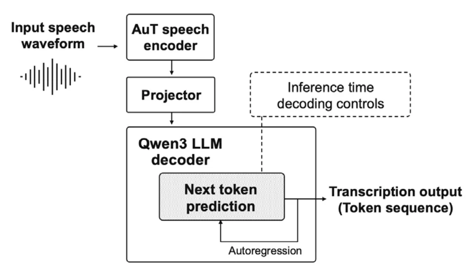
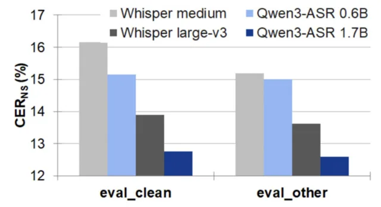

Hi, my name is So Yeong Park. I'm an undergraduate researcher at Hanshin University, SAI Lab, advised by Prof. Seon Man Kim. I work on Korean speech recognition, audio-language retrieval, and evaluating language models.
Education
- Aug 2025–PresentScholar, ILJU Academy and Culture Foundation 33rd cohort
- 2024–2027B.S. in AI & Software, Hanshin University expected, second half of 2027
GPA 4.38 / 4.50 · Double major in AI-Integrated Disability Life Care - 2020–2023Hyundai Chungun High School 18th cohort
Research
- 2026–PresentAudio moment retrieval ongoing
Finding the part of a recording that matches a text query - 2026Qwen3-ASR on Korean speech
Automatic speech recognition (ASR): model size and decoding settings across Korean corpora
Journal article · IEIE poster · Speech Sciences poster
Qwen3-ASR architecture, with the decoding controls adjusted at inference time. - 2025–2026Question answering (QA) on university academic regulations
Datasets for grounded answers and error correction
Data Science poster · Smart Media poster

Publications
-
J1
Evaluation of Qwen3-ASR and Analysis of Inference Parameters across Multiple Korean Speech CorporaThe Journal of the Acoustical Society of Korea, 45(5), 2026 · SCOPUS-indexed, in press

Character error rate (lower is better): Qwen3-ASR 1.7B was lowest on both sets. -
C1
Constructing a Synthetic Dataset for Error Review and Correction Training in Academic-Regulation Question Answering ModelsKorean Association of Data Science Summer Conference, Jun 2026 · PosterPaper Encouragement Award
-
C2
Inference Parameter Optimization of Qwen3-ASR across Multiple Korean Speech CorporaInstitute of Electronics and Information Engineers (IEIE) Summer Conference, Jun 2026 · Poster
-
C3
Inference Parameter Optimization of Public Multilingual ASR Model for Korean Speech RecognitionJoint Spring Conference of the Korean Society of Speech Sciences & Phonology-Morphology Circle of Korea, Jun 2026 · Poster
-
C4
Design and Construction of Rubric-Based Training Dataset for University Academic RegulationsKorean Institute of Smart Media Fall Conference, Nov 2025 · PosterOutstanding Paper Award
-
C5
Low-Latency Deep Learning-Based Denoising of Self-Generated Footstep Noise in Quadruped Robots for Remote Acoustic Situational Awareness16th International Conference on Theoretical and Computational Acoustics (ICTCA 2025), Busan, Aug 2025

Awards
- Jun 2026Paper Encouragement Award, Korean Association of Data Science
- Nov 2025Outstanding Paper Award, Korean Institute of Smart Media
- Nov 2025Grand Prize, Hanshin University AI Festival, General Division
- Oct 2025
- Aug 2025Outstanding Paper Award, DAEHAN Society of Industrial Management
Improving Service Delivery for AI-Based Assistive Devices and Welfare Equipment for People with Disabilities and Older Adults - May 2025Grand Prize, AI/Blockchain Startup Competition
Korea University SW-Centered University Program (Team Lead)
Leadership
- 2026–PresentLeader, AIUX Lab
Organizing regular activities and research exchange for an undergraduate research community
News
- Fall 2026Teaching Assistant, Applied Deep Learning
- Spring 2026Teaching Assistant, AI·SW Mathematics
- Jan 2026Selected by the university to attend CES 2026